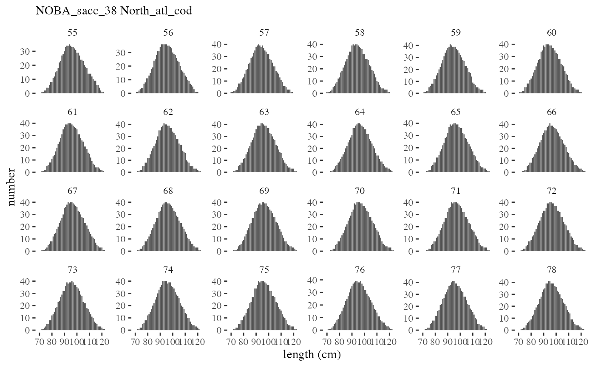
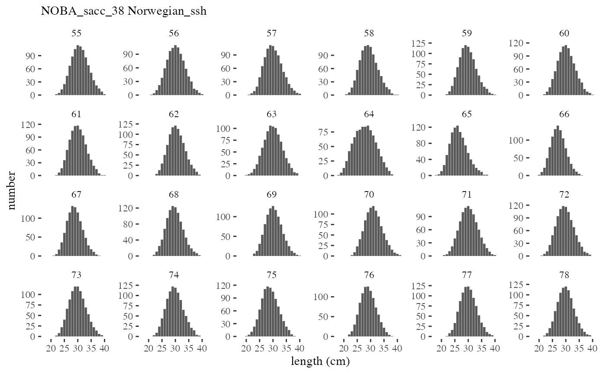
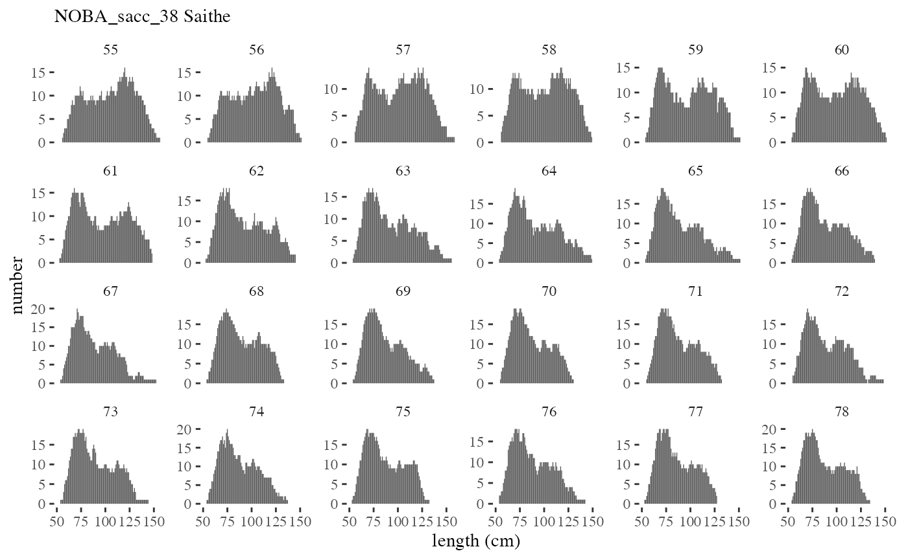
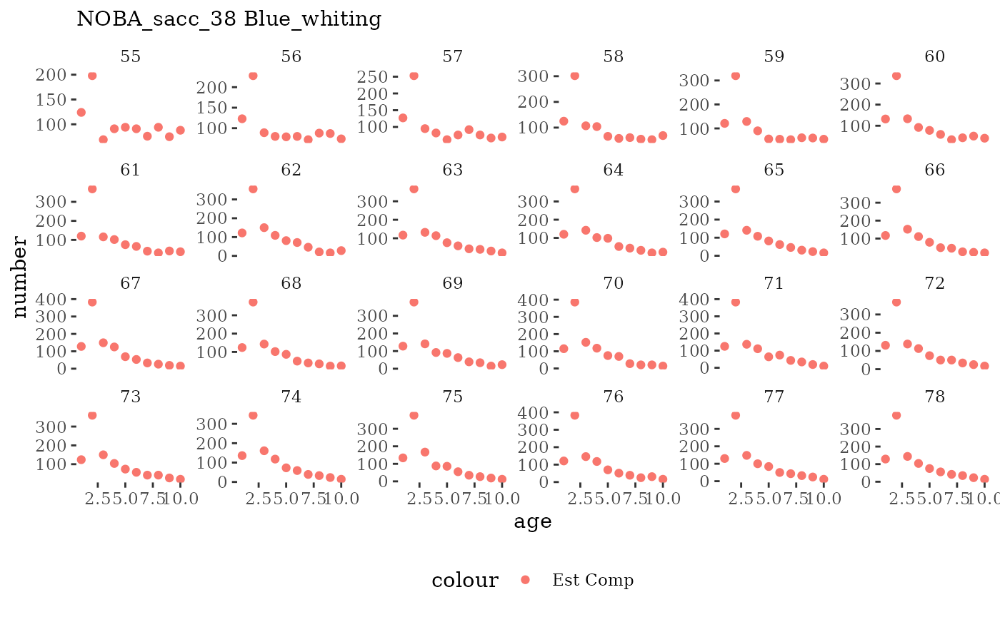
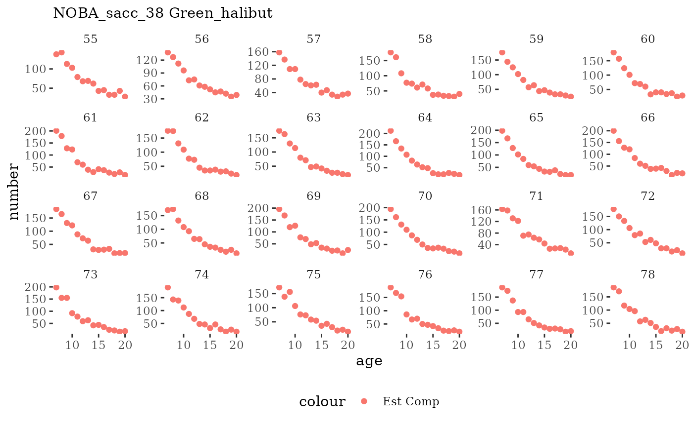
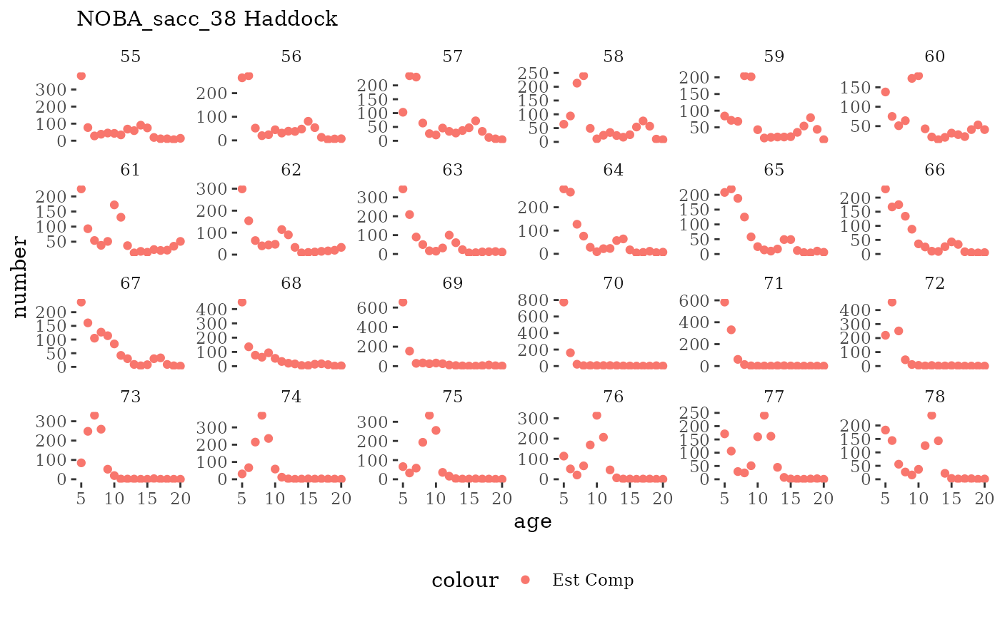
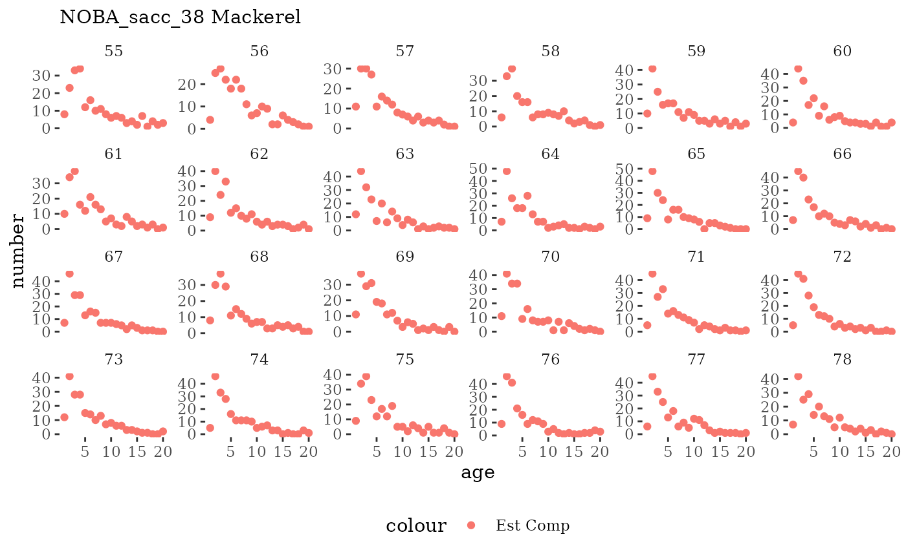
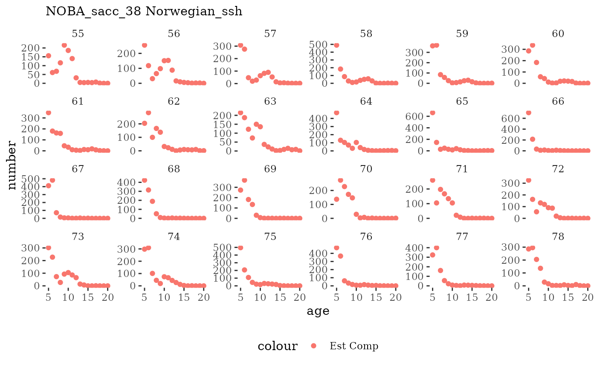
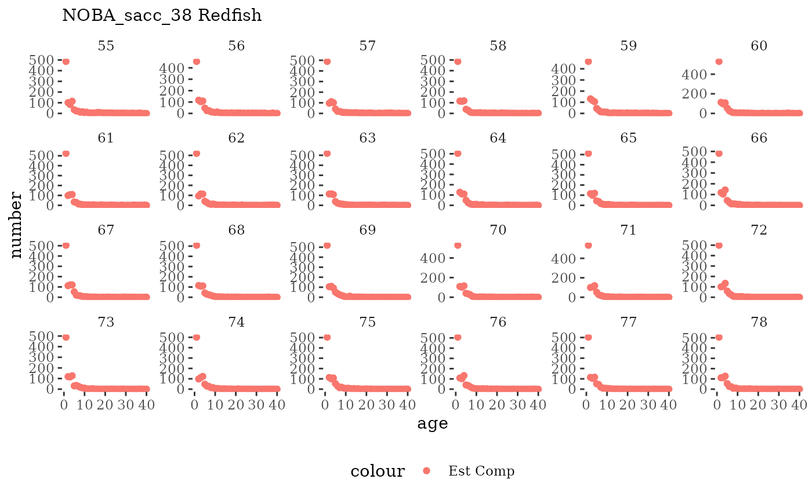
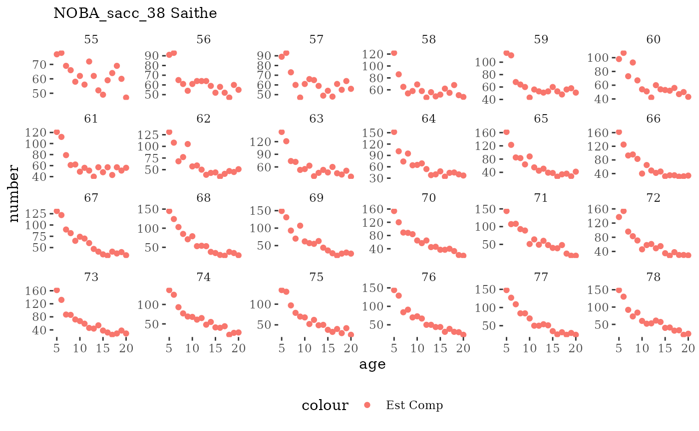

Simulating input data from an ecosystem model
Here we use existing Atlantis ecosystem model output to generate input datasets for a variety of simpler population models, so that the performance of these models can be evaluated against known (simulated) ecosystem dynamics. Atlantis is an end-to-end spatial ecosystem model capable of including climate effects, seasonal migration, food web, and fishery interactions (Audzijonyte et al., 2019).
We extract simulated data using the R package atlantisom.
The purpose of atlantisom is to use existing Atlantis model
output to generate input datasets for a variety of models, so that the
performance of these models can be evaluated against known (simulated)
ecosystem dynamics. The process is briefly described here.
Atlantis models can be run using different climate forcing, fishing, and
other scenarios. Users of atlantisom specify fishery
independent and fishery dependent sampling in space and time, as well as
species-specific catchability, selectivty, and other observation
processes for any Atlantis scenario. Internally consistent multispecies
and ecosystem datasets with known observation error characteristics are
atlantisom outputs, for use in individual model performance
testing, comparing performance of alternative models, and performance
testing of model ensembles against “true” Atlantis outputs.
The simulated dataset is based on output of the Norwegian and Barents Sea (NOBA) Atlantis model (Hansen et al., 2019, 2016). The simulated dataset contains comparable survey, fishery, and composition data as the Georges Bank dataset, but the time series span 80 simulation years and include 11 species. This dataset was used for initial model development, code quality testing, and model skill assessment by the modeling teams. Details of the dataset including construction and basic attributes are below.
Species in the ms-keyrun dataset
Our initial species selection includes 11 single species groups from the Atlantis NOBA model.
lname <- data.frame(Name= c("Long_rough_dab",
"Green_halibut",
"Mackerel",
"Haddock",
"Saithe",
"Redfish",
"Blue_whiting",
"Norwegian_ssh",
"North_atl_cod",
"Polar_cod",
"Capelin"),
Long.Name = c("Long rough dab",
"Greenland halibut",
"Mackerel",
"Haddock",
"Saithe",
"Redfish",
"Blue whiting",
"Norwegian spring spawning herring",
"Northeast Atlantic Cod",
"Polar cod",
"Capelin"),
Latin = c("*Hippoglossoides platessoides*",
"*Reinhardtius hippoglossoides*",
"*Scomber scombrus*",
"*Melongrammus aeglefinus*",
"*Pollachius virens*",
"*Sebastes mentella*",
"*Micromesistius poutassou*",
"*Clupea harengus*",
"*Gadus morhua*",
"*Boreogadus saida*",
"*Mallotus villosus*"),
Code = c("LRD", "GRH", "MAC", "HAD", "SAI", "RED",
"BWH", "SSH", "NCO", "PCO", "CAP")
)
# sppsubset <- merge(fgs, lname, all.y = TRUE)
# spptable <- sppsubset %>%
# arrange(Index) %>%
# select(Name, Long.Name, Latin)
spptable <- lname %>%
select(Name, Long.Name, Latin)
knitr::kable(spptable, col.names = c("Model name", "Full name", "Latin name"))| Model name | Full name | Latin name |
|---|---|---|
| Long_rough_dab | Long rough dab | Hippoglossoides platessoides |
| Green_halibut | Greenland halibut | Reinhardtius hippoglossoides |
| Mackerel | Mackerel | Scomber scombrus |
| Haddock | Haddock | Melongrammus aeglefinus |
| Saithe | Saithe | Pollachius virens |
| Redfish | Redfish | Sebastes mentella |
| Blue_whiting | Blue whiting | Micromesistius poutassou |
| Norwegian_ssh | Norwegian spring spawning herring | Clupea harengus |
| North_atl_cod | Northeast Atlantic Cod | Gadus morhua |
| Polar_cod | Polar cod | Boreogadus saida |
| Capelin | Capelin | Mallotus villosus |
Generating a dataset
Configuration files specified once
NOBA2config.R specifies location and names of files
needed for atlantisom to initialize:
d.name <- here("simulated-data/atlantisoutput","NOBA_sacc_38")
functional.groups.file <- "nordic_groups_v04.csv"
biomass.pools.file <- "nordic_biol_v23.nc"
biol.prm.file <- "nordic_biol_incl_harv_v_011_1skg.prm"
box.file <- "Nordic02.bgm"
initial.conditions.file <- "nordic_biol_v23.nc"
run.prm.file <- "nordic_run_v01.xml"
scenario.name <- "nordic_runresults_01"
bioind.file <- "nordic_runresults_01BiomIndx.txt"
catch.file <- "nordic_runresults_01Catch.txt"
annage <- TRUE
fisheries.file <- "NoBAFisheries.csv"omdimensions.R standardizes timesteps, etc. (this is
part of atlantisom and should not need to be changed by the user):
#survey species inherited from omlist_ss
survspp <- omlist_ss$species_ss
# survey season and other time dimensioning parameters
# generalized timesteps all models
noutsteps <- omlist_ss$runpar$tstop/omlist_ss$runpar$outputstep
timeall <- c(0:noutsteps)
stepperyr <- if(omlist_ss$runpar$outputstepunit=="days") 365/omlist_ss$runpar$toutinc
midptyr <- round(median(seq(0,stepperyr)))
# model areas, subset in surveyconfig
allboxes <- c(0:(omlist_ss$boxpars$nbox - 1))
# fishery output: learned the hard way this can be different from ecosystem outputs
fstepperyr <- if(omlist_ss$runpar$outputstepunit=="days") 365/omlist_ss$runpar$toutfinc
# survey selectivity (agecl based)
sp_age <- omlist_ss$funct.group_ss[, c("Name", "NumCohorts", "NumAgeClassSize")]
# should return all age classes fully sampled (Atlantis output is 10 age groups per spp)
n_age_classes <- sp_age$NumCohorts
# changed below for multiple species NOTE survspp alphabetical; NOT in order of fgs!!
# this gives correct names
age_classes <- lapply(n_age_classes, seq)
names(age_classes)<-sp_age$Name
n_annages <- sp_age$NumCohorts * sp_age$NumAgeClassSize
# changed below for multiple species
annages <- lapply(n_annages, seq)
names(annages)<-sp_age$NameChange these survey and fishery config files
mssurvey_spring.R and mssurvey_fall.R
configure the fishery independent surveys (in this census test, surveys
sample all model polygons in all years and have efficiency of 1 for all
species, with no size selectivity):
# Default survey configuration here has a range of efficiencies and selectivities
# To emulate a range of species in a single multispecies survey
# Also now happens in "spring" and "fall"
# Need to define survey season, area, efficiency, selectivity
# Survey name
survey.name="BTS_spring_allbox_effic1"
#Atlantis model timestep corresponding to the true output--now from census_spec.R
timestep <- stepperyr #5
#Which atlantis timestep does the survey run in?--now from census_spec.R
# with 5 output steps per year, 0 is Jan-Feb-midMar, 1 is midMar-Apr-May,
# 2 is June-July-midAug, 3 is midAug-Sept-Oct, 4 is Nov-Dec (ish)
# No, timestep 0 is initial condition and should be ignored to align
# snapshots (biomass, numbers) with
# cumulative outputs (fishery catch, numbers)
# with 5 output steps per (non leap) year:
# 1 is day 73, or 14 March
# 2 is day 146, or 26 May
# 3 is day 219, or 7 August
# 4 is day 292, or 19 October
# 5 is day 365, or 31 December
survey_sample_time <- 1 # spring survey
#The last timestep to sample
total_sample <- noutsteps-1 #495
#Vector of indices of survey times to pull
survey_sample_full <- seq(survey_sample_time,
total_sample, by=timestep)
survtime <- survey_sample_full
# survey area
# should return all model areas
survboxes <- allboxes
# survey efficiency (q)
# should return a perfectly efficient survey
surveffic <- data.frame(species=survspp,
efficiency=rep(1.0,length(survspp)))
# survey selectivity (agecl based)
# this is by age class, need to change to use with ANNAGEBIO output
#survselex <- data.frame(species=rep(names(age_classes), each=n_age_classes),
# agecl=rep(c(1:n_age_classes),length(survspp)),
# selex=rep(1.0,length(survspp)*n_age_classes))
# for annage output uses names(annages) NOT alphabetical survspp
survselex <- data.frame(species=rep(names(annages), n_annages), #
agecl=unlist(sapply(n_annages,seq)),
selex=rep(1.0,sum(n_annages)))
survselex.agecl <- survselex
# effective sample size needed for sample_fish
# this effective N is high but not equal to total for numerous groups
surveffN <- data.frame(species=survspp, effN=rep(100000, length(survspp)))
# survey index cv needed for sample_survey_xxx
# cv = 0.1
surv_cv <- data.frame(species=survspp, cv=rep(0.1,length(survspp)))
# length at age cv for input into calc_age2length function
# function designed to take one cv for all species, need to change to pass it a vector
lenage_cv <- 0.1
# max size bin for length estimation, function defaults to 150 cm if not supplied
maxbin <- 200
# diet sampling parameters
alphamult <- 10000000
unidprey <- 0
# Default survey configuration here has a range of efficiencies and selectivities
# To emulate a range of species in a single multispecies survey
# Also now happens in "spring" and "fall"
# Need to define survey season, area, efficiency, selectivity
# Survey name
survey.name="BTS_fall_allbox_effic1"
#Atlantis model timestep corresponding to the true output--now from census_spec.R
timestep <- stepperyr #5
#Which atlantis timestep does the survey run in?--now from census_spec.R
# with 5 output steps per year, 0 is Jan-Feb-midMar, 1 is midMar-Apr-May,
# 2 is June-July-midAug, 3 is midAug-Sept-Oct, 4 is Nov-Dec (ish)
# No, timestep 0 is initial condition and should be ignored to align
# snapshots (biomass, numbers) with
# cumulative outputs (fishery catch, numbers)
# with 5 output steps per (non leap) year:
# 1 is day 73, or 14 March
# 2 is day 146, or 26 May
# 3 is day 219, or 7 August
# 4 is day 292, or 19 October
# 5 is day 365, or 31 December
survey_sample_time <- 3 # fall survey
#The last timestep to sample
total_sample <- noutsteps-1 #495
#Vector of indices of survey times to pull
survey_sample_full <- seq(survey_sample_time,
total_sample, by=timestep)
survtime <- survey_sample_full
# survey area
# should return all model areas
survboxes <- allboxes
# survey efficiency (q)
# should return a perfectly efficient survey
surveffic <- data.frame(species=survspp,
efficiency=rep(1.0,length(survspp)))
# survey selectivity (agecl based)
# this is by age class, need to change to use with ANNAGEBIO output
#survselex <- data.frame(species=rep(survspp, each=n_age_classes),
# agecl=rep(c(1:n_age_classes),length(survspp)),
# selex=rep(1.0,length(survspp)*n_age_classes))
# for annage output
survselex <- data.frame(species=rep(names(annages), n_annages), #
agecl=unlist(sapply(n_annages,seq)),
selex=rep(1.0,sum(n_annages)))
survselex.agecl <- survselex
# effective sample size needed for sample_fish
# this effective N is high but not equal to total for numerous groups
surveffN <- data.frame(species=survspp, effN=rep(100000, length(survspp)))
# survey index cv needed for sample_survey_xxx
# cv = 0.1
surv_cv <- data.frame(species=survspp, cv=rep(0.1,length(survspp)))
# length at age cv for input into calc_age2length function
# function designed to take one cv for all species, need to change to pass it a vector
lenage_cv <- 0.1
# max size bin for length estimation, function defaults to 150 cm if not supplied
maxbin <- 200
# diet sampling parameters
alphamult <- 10000000
unidprey <- 0msfishery.R configures the fishery dependent data:
# Default fishery configuration here is a census
fishery.name="census"
# Inherits species from input omlist_ss
fishspp <- omlist_ss$species_ss
#Number of years of data to pull
nyears <- 50
#Atlantis initialization period in years
burnin <- 30
# fishery output: learned the hard way this can be different from ecosystem outputs
fstepperyr <- if(omlist_ss$runpar$outputstepunit=="days") 365/omlist_ss$runpar$toutfinc
# same time dimensioning parameters as in surveycensus.R
#Vector of indices of catch in numbers to pull (by timestep to sum)
fish_sample_full <- c(0:total_sample) #total_sample defined in sardinesurvey.R
fish_burnin <- burnin*fstepperyr+1
fish_nyears <- nyears*fstepperyr
fish_times <- fish_sample_full[fish_burnin:(fish_burnin+fish_nyears-1)]
fish_timesteps <- seq(fish_times[fstepperyr], max(fish_times), by=fstepperyr) #last timestep
#fish_years <- unique(floor(fish_times/fstepperyr)+1) # my original
fish_years <- unique(floor(fish_times/fstepperyr)) #from Christine's new sardine_config.R
fishtime <- fish_times
# fishery sampling area
# should return all model areas, this assumes you see everything that it caught
fishboxes <- c(0:(omlist_ss$boxpars$nbox - 1))
# effective sample size needed for sample_fish
# this effective N is divided by the number of annual timesteps below, so 200 per time
# use as input to the length samples, ages can be a subset
fisheffN <- data.frame(species=survspp, effN=rep(1000, length(survspp)))
#this adjusts for subannual fishery output so original effN is for whole year
fisheffN$effN <- fisheffN$effN/fstepperyr
# fishery catch cv can be used in sample_survey_biomass
# perfect observation
fish_cv <- data.frame(species=survspp, cv=rep(0.01,length(survspp)))Run atlantisom and save outputs
True datasets are generated as follows, using atlantisom
wrapper functions om_init to assemble initial true atlantis
data, om_species to subset true data for desired species,
om_index to generate survey biomass and total catch biomass
indices, om_comps to generate age and length compositions
and average weight at age from surveys and fisheries, and
om_diet to generate diet from surveys. Outputs are saved to
the atlantisoutput folder (not kept on github due to
size):
NOBAom <- om_init(here("simulated-data/config/NOBA_sacc38Config.R"))
NOBAom_ms <- om_species(sppsubset$Name, NOBAom)
#need to change internal call to source in atlantisom om_index om_comps and om_diet functions
#expecting a config folder in same directory as rmd
#this is a workaround
dir.create(file.path(here("docs/config")))
file.copy(here("simulated-data/config/omdimensions.R"), here("docs/config/omdimensions.R"))
NOBAom_ms_ind <- om_index(usersurvey = c(here("simulated-data/config/mssurvey_spring.R"),
here("simulated-data/config/mssurvey_fall.R")),
userfishery = here("simulated-data/config/msfishery.R"),
omlist_ss = NOBAom_ms,
n_reps = 1,
save = TRUE)
NOBAom_ms_comp <- om_comps(usersurvey = c(here("simulated-data/config/mssurvey_spring.R"),
here("simulated-data/config/mssurvey_fall.R")),
userfishery = here("simulated-data/config/msfishery.R"),
omlist_ss = NOBAom_ms,
n_reps = 1,
save = TRUE)
NOBAom_ms_diet <- om_diet(config = here("simulated-data/config", "NOBA2config.R"),
dietfile = "NOBADetDiet.gz",
usersurvey = c(here("simulated-data/config/mssurvey_spring.R"),
here("simulated-data/config/mssurvey_fall.R")),
omlist_ss = NOBAom_ms,
n_reps = 1,
save = TRUE)
unlink(here("docs/config"), recursive = TRUE)Create mskeyrun simulated data
Scripts in ms-keyrun/data-raw show the process of making
mskeyun datasets from atlantisom output generated above.
Atlantis outputs and atlantisom outputs produced above are
local to Sarah’s computer for this code to run, as they are too large
for github. However, the scripts are linked here to show the process.
Overall this script creates all datasets using functions specific to
each data type:
#' Sarah's notes for building simulated dataset
#'
#' all atlantis files are local on my computer in folder
#' ms-keyrun/simlulated-data/atlantisoutput
#'
#' see SimData.Rmd for how these are generated using atlantisom
#'
#' to make data for package
#' source these files in data-raw/R:
#'
#' create_sim_focal_species.R
#' get_sim_survey_index.R
#'
#' run from ms-keyrun directory
library(here)
atlmod <- here("data-raw/simulated-data/config/NOBA_sacc38Config.R")
create_sim_focal_species(atlmod)
create_sim_biolpar(atlmod)
create_sim_survey_index(atlmod, fitstart=40, fitend=120)
create_sim_fishery_index(atlmod, fitstart=40, fitend=120)
create_sim_survey_agecomp(atlmod, fitstart=40, fitend=120)
create_sim_fishery_agecomp(atlmod, fitstart=40, fitend=120)
create_sim_survey_lencomp(atlmod, fitstart=40, fitend=120)
create_sim_fishery_lencomp(atlmod, fitstart=40, fitend=120)
create_sim_survey_dietcomp(atlmod, fitstart=40, fitend=120)
create_sim_survey_bottemp(atlmod, fitstart=40, fitend=120)
create_sim_fishery_wtage(atlmod, fitstart=40, fitend=120)
create_sim_survey_wtage(atlmod, fitstart=40, fitend=120)
create_sim_survey_agelen(atlmod, fitstart=40, fitend=120)
create_sim_percapconsumption(atlmod, fitstart=40, fitend=120)
create_sim_startpars(atlmod, fitstart=40, fitend=120)For example, create_sim_survey_index() takes the saved
atlantisom output plus user specifications for fit start
and end years to produce the dataset
mskeyrun::simSurveyIndex:
#' Read in survey data save as rda
#'
#' atlantosom output is accessed and surveys pulled over time
#'
#'@param atlmod configuration file specifying Atlantis simulation model filenames
#'and locations
#'@param saveToData Boolean. Export to data folder (Default = T)
#'
#'@return A tibble (Also written to \code{data} folder)
#'\item{ModSim}{Atlantis model name and simulation id}
#'\item{year}{year simulated survey conducted}
#'\item{Code}{Atlantis model three letter code for functional group}
#'\item{Name}{Atlantis model common name for functional group}
#'\item{survey}{simulated survey name}
#'\item{variable}{biomass or coefficient of variation (cv) of biomass}
#'\item{value}{value of the variable}
#'\item{units}{units of the variable}
#'
library(magrittr)
create_sim_survey_index <- function(atlmod,fitstart=NULL,fitend=NULL,saveToData=T) {
# input is path to model config file for atlantisom
source(atlmod)
# path for survey and fishery config files
cfgpath <- stringr::str_extract(atlmod, ".*config")
#works because atlantis directory named for model and simulation
modpath <- stringr::str_split(d.name, "/", simplify = TRUE)
modsim <- modpath[length(modpath)]
#read in survey biomass data
survObsBiom <- atlantisom::read_savedsurvs(d.name, 'survB') #reads in all surveys
# get config files for survey cv
svcon <- list.files(path=cfgpath, pattern = "*survey*", full.names = TRUE)
# read true list with run and biol pars, etc
omlist_ss <- readRDS(file.path(d.name, paste0(scenario.name, "omlist_ss.rds")))
# model timesteps, etc from omdimensions script
source(paste0(cfgpath,"/omdimensions.R"), local = TRUE)
#Number of years
nyears <- omlist_ss$runpar$nyears
total_sample <- omlist_ss$runpar$tstop/omlist_ss$runpar$outputstep
# user specified fit start and times if different from full run
fitstartyr <- ifelse(!is.null(fitstart), fitstart-1, 0)
fitendyr <- ifelse(!is.null(fitend), fitend, total_sample)
atlantis_full <- c(1:total_sample)
mod_burnin <- fitstartyr*stepperyr+1
fit_nyears <- fitendyr-fitstartyr
fit_ntimes <- fit_nyears*stepperyr
fittimes <- atlantis_full[mod_burnin:(mod_burnin+fit_ntimes-1)]
#fit_timesteps <- seq(fittimes[stepperyr], max(fittimes), by=stepperyr) #last timestep
#fit_years <- unique(floor(fittimes/stepperyr)) #from Christine's new sardine_config.R
#fittimes.days <- if(omlist_ss$runpar$outputstepunit=="days") fittimes*omlist_ss$runpar$outputstep
# survey cv lookup from config files
svcvlook <- tibble::tibble()
for(c in 1:length(svcon)){
source(svcon[c], local = TRUE)
surv_cv_n <- surv_cv %>%
dplyr::mutate(survey=survey.name)
svcvlook <- dplyr::bind_rows(svcvlook, surv_cv_n)
}
allsvbio <- tibble::tibble()
#multiple surveys named in list object
for(s in names(survObsBiom)){
#arrange into wide format: year, Species1, Species2 ... and write csv
svbio <- survObsBiom[[s]][[1]] %>%
dplyr::filter(time %in% fittimes) %>%
dplyr::mutate(year = ceiling(time/stepperyr)) %>%
dplyr::select(species, year, atoutput) %>%
dplyr::rename(biomass = atoutput) %>%
dplyr::left_join(dplyr::select(omlist_ss$funct.group_ss, Code, Name), by = c("species" = "Name")) %>%
dplyr::mutate(ModSim = modsim) %>%
dplyr::mutate(survey = s) %>%
dplyr::left_join(svcvlook) %>%
dplyr::select(ModSim, year, Code, Name=species, survey, everything()) %>%
tidyr::pivot_longer(cols = c("biomass", "cv"),
names_to = "variable",
values_to = "value") %>%
dplyr::mutate(units = ifelse(variable=="biomass", "tons", "unitless")) %>%
dplyr::arrange(Name, survey, variable, year)
allsvbio <- dplyr::bind_rows(allsvbio, svbio)
}
simSurveyIndex <- allsvbio
if (saveToData) {
#saveRDS(focalSpecies,saveToRDS)
usethis::use_data(simSurveyIndex, overwrite = TRUE)
}
return(simSurveyIndex)
}All functions are in this mskeyrun repository folder: https://github.com/NOAA-EDAB/ms-keyrun/tree/master/data-raw/R
Visualize simulated data
Plotting functions
A collection of functions used previously that may be harvested and modified for diagnostics or visualizations in the ms-keyrun and ICES WGSAM skill assessment projects.
# plot biomass time series facet wrapped by species
plotB <- function(dat, truedat=NULL){
svbio <- dat %>% filter(variable=="biomass")
svcv <- dat %>% filter(variable=="cv")
ggplot() +
geom_line(data=svbio, aes(x=year,y=value, color="Survey Biomass"),
alpha = 10/10) +
{if(!is.null(truedat)) geom_line(data=truedat, aes(x=time/365,y=atoutput, color="True B"), alpha = 3/10)} +
theme_tufte() +
theme(legend.position = "top") +
xlab("model year") +
ylab("tons") +
labs(colour=dat$ModSim) +
facet_wrap(~Name, scales="free")
}
# make a catch series function that can be split by fleet? this doesnt
# also note different time (days) from model timestep in all other output
plotC <- function(dat, truedat=NULL){
ctbio <- dat %>% filter(variable=="catch")
ctcv <- dat %>% filter(variable=="cv")
ggplot() +
geom_line(data=ctbio, aes(x=year,y=value, color="Catch biomass"),
alpha = 10/10) +
{if(!is.null(truedat)) geom_line(data=truedat, aes(x=time/365,y=atoutput, color="True Catch"), alpha = 3/10)} +
theme_tufte() +
theme(legend.position = "top") +
xlab("model year") +
ylab("tons") +
labs(colour=dat$ModSim) +
facet_wrap(~Name, scales="free")
}
# note on ggplot default colors, can get the first and second using this
# library(scales)
# show_col(hue_pal()(2))
# plot length frequencies by timestep (one species)
plotlen <- function(dat, effN=1, truedat=NULL){
cols <- c("Census Lcomp"="#00BFC4","Sample Lcomp"="#F8766D")
ggplot(mapping=aes(x=lenbin)) +
{if(is.null(truedat)) geom_bar(data=dat, aes(weight = value/effN))} +
{if(!is.null(truedat)) geom_bar(data=dat, aes(weight = censuslen/totlen, fill="Census Lcomp"), alpha = 5/10)} +
{if(!is.null(truedat)) geom_bar(data=dat, aes(weight = atoutput/effN, fill="Sample Lcomp"), alpha = 5/10)} +
theme_tufte() +
theme(legend.position = "bottom") +
xlab("length (cm)") +
{if(is.null(truedat)) ylab("number")} +
{if(!is.null(truedat)) ylab("proportion")} +
scale_colour_manual(name="", values=cols) +
labs(subtitle = paste(dat$ModSim,
dat$Name)) +
facet_wrap(~year, ncol=6, scales="free_y")
}
# plot numbers at age by timestep (one species)
Natageplot <- function(dat, effN=1, truedat=NULL){
ggplot() +
geom_point(data=dat, aes(x=age, y=value/effN, color="Est Comp")) +
{if(!is.null(truedat)) geom_line(data=dat, aes(x=agecl, y=numAtAge/totN, color="True Comp"))} +
theme_tufte() +
theme(legend.position = "bottom") +
xlab("age") +
{if(is.null(truedat)) ylab("number")} +
{if(!is.null(truedat)) ylab("proportion")} +
labs(subtitle = paste(dat$ModSim,
dat$Name)) +
facet_wrap(~year, ncol=6, scales="free_y")
}
# plot weight at age time series facet wrapped by species
wageplot <- function(dat, truedat=NULL){
ggplot(dat, aes(year, value)) +
geom_line(aes(colour = factor(age))) +
theme_tufte() +
theme(legend.position = "bottom") +
xlab("model year") +
ylab("average individual weight (g)") +
labs(subtitle = paste0(dat$ModSim)) +
facet_wrap(c("Name"), scales="free_y")
}Read in the “data” to check with plots
The mskeyrun simulated data objects are all
dataframes.
survObsBiom <- mskeyrun::simSurveyIndex #atlantisom::read_savedsurvs(d.name, 'survB')
#age_comp_data <- mskeyrun::simSurveyAgeLencomp #atlantisom::read_savedsurvs(d.name, 'survAge') #not using in assessment
len_comp_data <- mskeyrun::simSurveyLencomp #atlantisom::read_savedsurvs(d.name, 'survLen')
#wtage <- atlantisom::read_savedsurvs(d.name, 'survWtage') #not using in assessment
annage_comp_data <- mskeyrun::simSurveyAgecomp #atlantisom::read_savedsurvs(d.name, 'survAnnAge')
annage_wtage <- mskeyrun::simSurveyWtatAge #atlantisom::read_savedsurvs(d.name, 'survAnnWtage')
#all_diets <- atlantisom::read_savedsurvs(d.name, 'survDiet') #not using in assessment
catchbio_ss <- mskeyrun::simCatchIndex #atlantisom::read_savedfisheries(d.name, 'Catch')
catchlen_ss <- mskeyrun::simFisheryLencomp #atlantisom::read_savedfisheries(d.name, "catchLen")
#fish_age_comp <- #atlantisom::read_savedfisheries(d.name, "catchAge")
fish_annage_comp <- mskeyrun::simFisheryAgecomp #atlantisom::read_savedfisheries(d.name, 'catchAnnAge')
fish_annage_wtage <- mskeyrun::simFisheryWtatAge #atlantisom::read_savedfisheries(d.name, 'catchAnnWtage')Visualize survey outputs
These plots represent the full mskeyrun simulated time
series for the survey biomass index and weight at age, and a subset for
length and age composition.
# compare with true output (all timesteps)
# for(s in names(survObsBiom)){
# cat(" \n##### ", s," \n")
# print(plotB(survObsBiom[[s]][[1]], omlist_ss$truetotbio_ss))
# cat(" \n")
# }
# plots survey only
for(s in unique(survObsBiom$survey)){
cat(" \n##### ", s," \n")
print(plotB(survObsBiom %>%
filter((survey %in% s))))
cat(" \n")
}
# not the full time series, just 24 yrs after catches start in year 55
for(s in unique(len_comp_data$survey)){
cat(" \n##### ", s," \n")
lcompsub <- len_comp_data %>% filter(survey %in% s) %>% filter(year %in% c(55:78)) %>%
group_by(Name) %>%
group_map(~ plotlen(.x), keep = TRUE)
for(i in 1:length(lcompsub)) {
print(lcompsub[[i]])
}
cat(" \n")
}
for(s in unique(annage_comp_data$survey)){
cat(" \n##### ", s," \n")
acompsub <- annage_comp_data %>% filter(survey %in% s) %>% filter(year %in% c(55:78)) %>%
group_by(Name) %>%
#left_join(., trueNage) %>%
group_map(~ Natageplot(.x), keep = TRUE) # plots only sampled age comp
#group_map(~ Natageplot(.x, effN = 100000, truedat = 1), keep = TRUE) # plots merged true age comp
for(i in 1:length(acompsub)) {
print(acompsub[[i]])
}
cat(" \n")
}Visualize fishery data
These plots represent the the full mskeyrun simulated
time series for fishery catch and weight at age, and a subset for length
and age composition.
# observed catch only
plotC(catchbio_ss)
lcompsub <- catchlen_ss %>% filter(year %in% c(55:78)) %>%
group_by(Name) %>%
group_map(~ plotlen(.x), keep = TRUE)
for(i in 1:length(lcompsub)) {
print(lcompsub[[i]])
}
acompsub <- fish_annage_comp %>% filter(year %in% c(55:78)) %>%
group_by(Name) %>%
#left_join(., trueCAA) %>%
group_map(~ Natageplot(.x), keep = TRUE) # plots only sampled age comp
#group_map(~ Natageplot(.x, effN = 200, truedat = 1), keep = TRUE) # plots merged true age comp
for(i in 1:length(acompsub)) {
print(acompsub[[i]])
}
wageplot(fish_annage_wtage)Write to model input files
Our goal was to have a reproducible process for all aspects of data
generation through model inputs. The simulated data is included in the
mskeyrun data package, data inputs are derived from those
sources.
Length-structured multispecies model (Hydra)
Hydra input files were developed directly from mskeyrun
datasets by modifying functions in the hydradata R
package. The function create_Rdata_mskeyrun.R (code)
allows the user to specify whether datasets should be constructed from
Atlantis-simulated or real Georges Bank data, and the number of length
bins to use for composition data, then creates an R data object. This
data object is then used to create data and parameter input files using
the function hydradata::create_datpin_files().
For example, this process creates the simulated dataset with 5 length bins:
The create_RData_mskeyrun.R file was sourced, and
create_RData_mskeyrun("sim", nlenbin = 5) was run to make a
new hydraDataList_msk.rda file in the package. Then the
package is built locally, R is restarted, and the following code block
is run to produce input files.
library(here)
library(hydradata)
inputs <- setup_default_inputs()
inputs$outDir <- here()
inputs$outputFilename <- "hydra_sim_NOBA_5bin_0comp"
# tpl code removes 0 so replace in data
nbins <- hydraDataList_msk$Nsizebins
hydraDataList_msk$observedCatchSize[,7:(6+nbins)][hydraDataList_msk$observedCatchSize[,7:(6+nbins)]==0] <- 1e-4
hydraDataList_msk$observedSurvSize[,6:(5+nbins)][hydraDataList_msk$observedSurvSize[,6:(5+nbins)]==0] <- 1e-4
hydraDataList_5bin_0comp <- create_datpin_files(inputs,hydraDataList_msk)
# this saves the specific hydralist object, so we could saveRDS it to a diagnostics folder?
# advantage of rds format is we can assign it when reading it in to diagnostics scripts
saveRDS(hydraDataList_5bin_0comp, file.path(here("inputRdatalists/hydraDataList_5bin_0comp.rds")))Run create_RData_mskeyrun("sim", nlenbin = 10) in
hydradata, rebuild package, restart R, then…
library(here)
library(hydradata)
inputs <- setup_default_inputs()
inputs$outDir <- here()
inputs$outputFilename <- "hydra_sim_NOBA_10bin_0comp"
# tpl code removes 0 so replace in data
nbins <- hydraDataList_msk$Nsizebins
hydraDataList_msk$observedCatchSize[,7:(6+nbins)][hydraDataList_msk$observedCatchSize[,7:(6+nbins)]==0] <- 1e-4
hydraDataList_msk$observedSurvSize[,6:(5+nbins)][hydraDataList_msk$observedSurvSize[,6:(5+nbins)]==0] <- 1e-4
hydraDataList_10bin_0comp <- create_datpin_files(inputs,hydraDataList_msk)
# this saves the specific hydralist object, so we could saveRDS it to a diagnostics folder?
# advantage of rds format is we can assign it when reading it in to diagnostics scripts
saveRDS(hydraDataList_10bin_0comp, file.path(here("inputRdatalists/hydraDataList_10bin_0comp.rds")))Age structured multispecies statistical catch at age model (MSSCAA)
Work in progress here but not finished for October 2022 review.